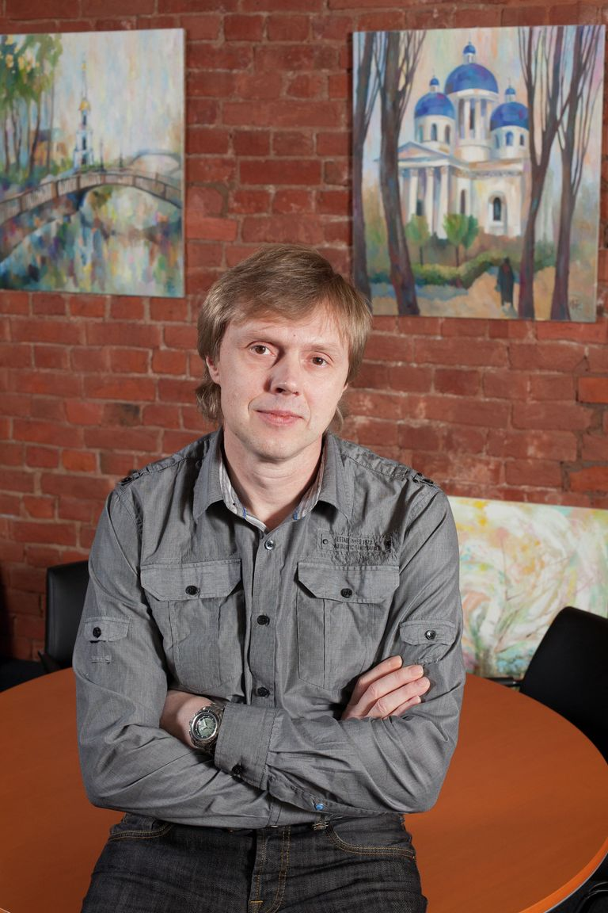

Первые годы жизни и образование
Рождение: Появился на свет в Ленинграде (ныне Санкт-Петербург) 22 апреля в 1964 году. Учёба: Окончил Ленинградский институт авиационного приборостроения (ЛИАП, сейчас — Государственный университет аэрокосмического приборостроения, ГУАП). Начало карьеры: После окончания вуза работал инженером по авиационным оборонным проектам в ЦНПО «Ленинец», где занимался разработкой и программированием. Позже он стал известным программистом и создателем популярного антивируса Dr.Web.